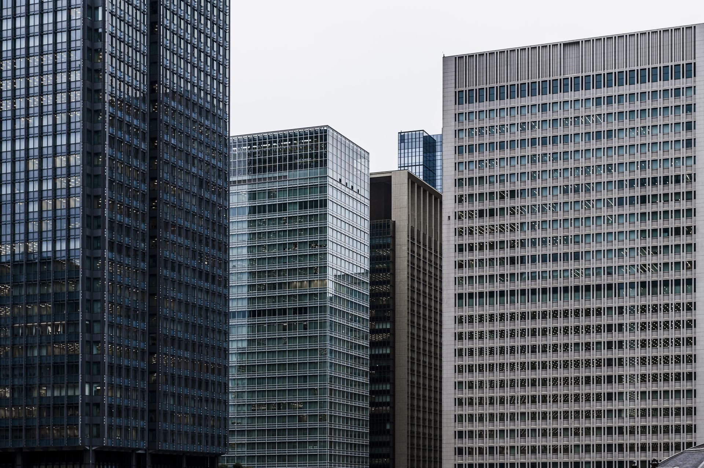
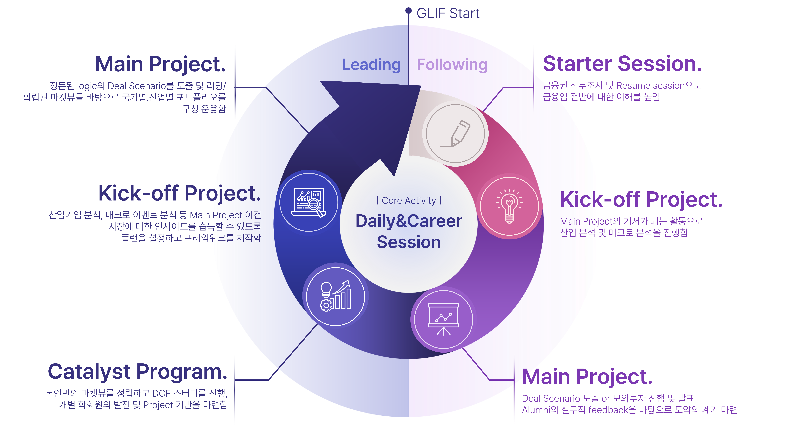

GLIF는 'Global Leader in Finance'의 약자로, 성균관대학교 글로벌 경제학과 & 글로벌 경영학과 대상 금융투자학회입니다. GLIF의 강점은 '유연성'으로 기초부터 심화까지, 국내에서 외국계 금융권까지 광범위한 진로를 탐색할 수 있는 커리큘럼과 네트워크입니다.
매일 진행되는 Daily Session을 통해 금융권 공통의 기본기를 연마합니다.
IM팀과 자산운용팀으로 나누어져 각 직군별로 필요한 지식에 대한 심화 프로젝트를 진행합니다. 학회원들은 2학기 동안 자유롭게 팀 간 이동이 가능합니다.
홈커밍 및 커리어 세션을 통해 현업에서 근무 중인 선배님들의 현장감 있는 피드백과 진로 준비에 관한 조언을 들을 수 있습니다.
- 영문 기사 스크랩을 통해
금융 이슈 Follow-up
국내외 시장 금리, 환율 등
경제 지표 Follow-up
- 금융업 직무 조사
- 매크로 분석 발표
- IM팀 Industry Report
- 자산운용팀 Market view
- IM(Information Memorandum) Project
- Asset Management Project
- S&T, 리서치, PE 기업금융 등
금융업 현직에 계신 alumni의
경험과 조언
- 매학기 홈커밍, 종강총회 진행
- Career Session 후 회식 진행
(자유롭게 참석 여부 결정 가능)
GLIF 활동은 2학기로 구성되어 있습니다. 1학기는 Following 기수로 참여해 금융 기본기를 다집니다. 또한 IM팀과 운용팀을 선택해 각 팀의 프로젝트를 경험하며 실력을 키웁니다. 2학기는 Leading 기수가 되어 프로젝트를 이끕니다. 방학 중 공식 활동은 없으나, 희망자에 한해 자발적 스터디를 진행합니다.

GLIF는 국내외 증권사, IB, 컨설팅 등 다양한 분야에서 활약하는 폭넓은 Alumni를 보유하고 있습니다. 글로벌 경제학과 & 글로벌 경영학과 대상으로만 운영되는 학회인만큼 끈끈한 네트워크를 자랑합니다.